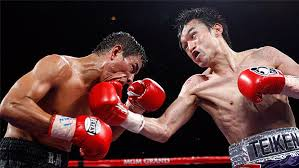
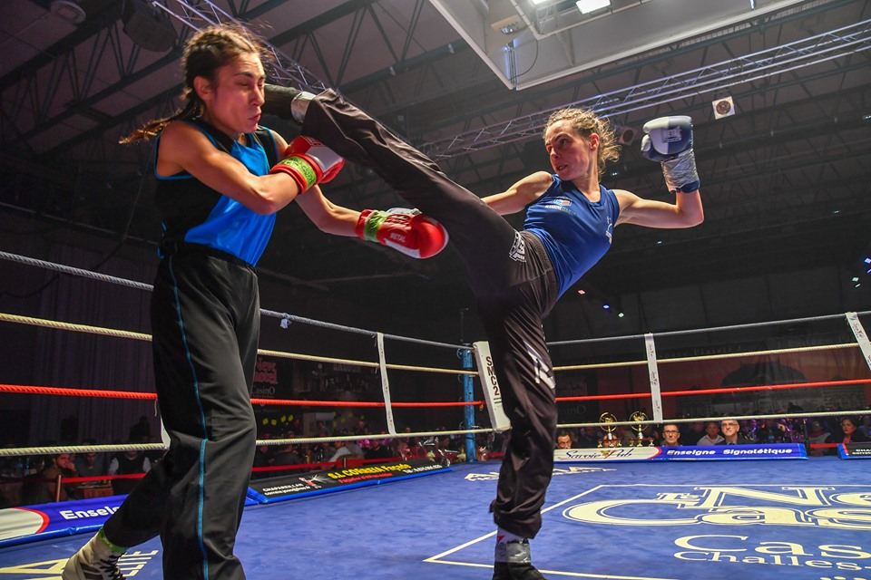
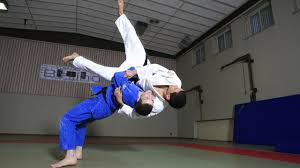

Boxe anglaise & boxe française

Vingt-cinq ans d'apprentissage et de pratique loisir : peu de succès, beaucoup d'amusement !

Site de la FFS
Judo
vingt ans d'apprentissage et de pratique loisir : encore moins de succès, toujours autant de plaisir !

Site de la FFJ
Retour à la page d'accueil